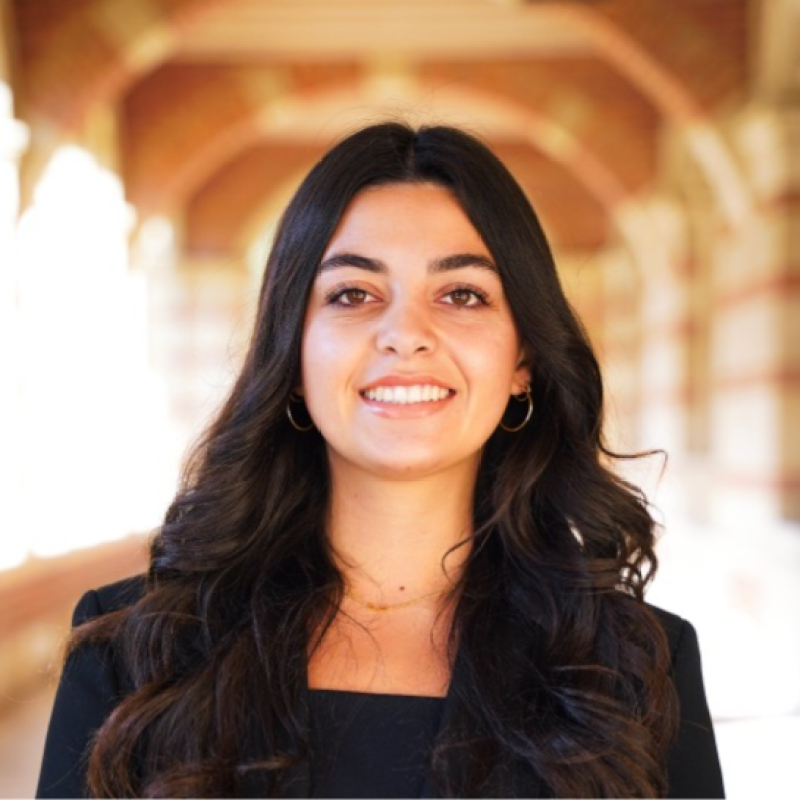
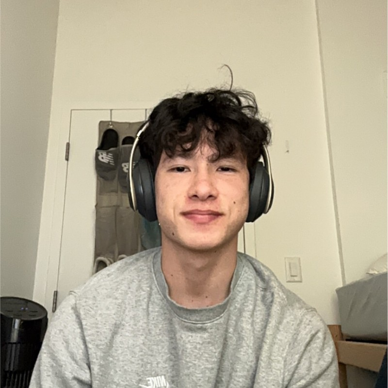
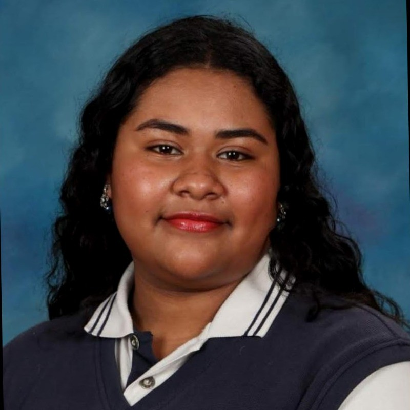
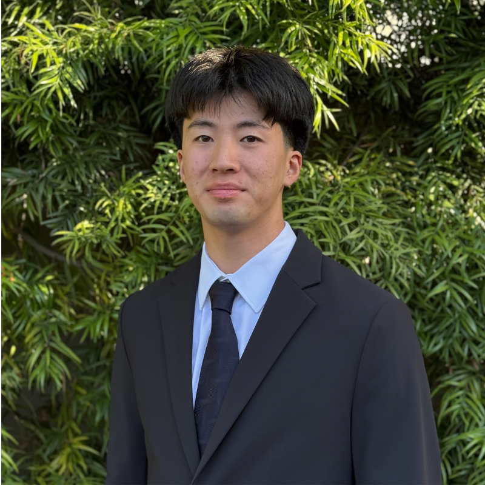
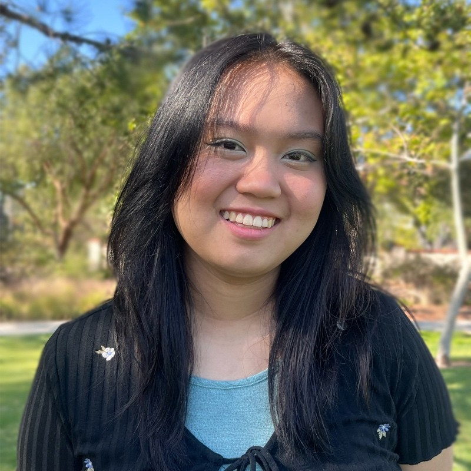

About Us
Who we are and what our team does
Our Team
Casey Bairley

she/her
Casey is a 3rd year Statistics and Data Science UCLA student. As a part of the team, Casey was responsible for cleaning and preparing the dataset, which included handling missing values and restructuring the data so it was easier to work with. This groundwork made the team’s visualizations and analysis possible. For more information about Casey, please refer to her linkedin profile.
Casey Bairley
William Berger

he/him
William is a fourth-year mathematics of computation major at UCLA. As a part of the team, William contributed to keeping the team on track and monitoring assignment progress during discussion. William set deadlines, checked in on everyone’s progress, and made sure each role’s work fit together, from the cleaned dataset to the final visualizations and analysis. By keeping communication open and tasks on track he helped the team turn a large, complex dataset into a finished project. For more information about William, please refer to his linkedin profile.
William Berger
Celine Garcia
 Content Developer
Content Developer
she/her
Celine is an Art History major, 3rd year transfer UCLA student.
As a part of the team, Celine contributed to . For more information about Celine, please refer to her linkedin profile.
Celine Garcia
Karen Martinez

she/her
Karen is a fourth-year Art History, Anthropology, and Digital Humanities triple major at UCLA.
As a part of the team, Karen contributed to . For more information about Karen, please refer to her linkedin profile.
Karen Martinez
Sabrina Price
 Editor
Editor
she/her
Sabrina is a third-year communication UCLA student who transferred in from community college.
As a part of the team, Sabrina contributed to overseeing the site’s overall design, readability, accessibility, and narrative. She made sure the site was cohesive and free of errors. For more information about Sabrina, please refer to her linkedin profile.
Sabrina Price
Aidan Ting

he/him
Aidan is a third-year political science UCLA student.
As a part of the team, Aidan contributed to . For more information about Aidan, please refer to his linkedin profile.
Aidan Ting
Anastasia Yang

she/they
Anastasia is a fourth-year computer science and engineering UCLA student who transferred in from community college.
As a part of the team, Anastasia contributed to the development and design of the website, helping to lay the foundational layout
for the other members to build upon. For more information about Anastasia, please refer to their linkedin profile.
Anastasia Yang
Generative AI Use
No generative artificial intelligence was used in the making of this website. Everything written was human-made by a team member, and the website was created by both team members and the template given by HTML5Up.
Acknowledgments
Special thanks to those that helped with the creation of this project, including Dr. Wendy Kurtz, and Teaching Assistant Pietro Santachiara who both helped in keeping the team on track and for guiding us through the steps of creating a digital humanities project.
License
The site template created by HTML5 UP are licensed under the Creative Commons Attribution 3.0 License, built by AJ with Responsive Tools.